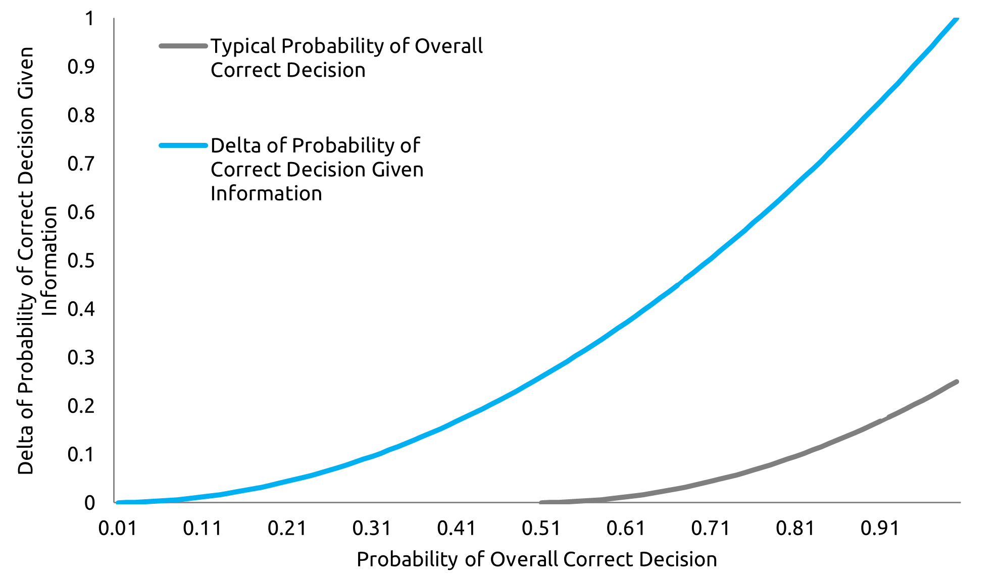

THE LETTER
Investing or trading is a game of probability at best. Even though few calculate the probability of a successful decision when trading or investing in a security, intuitively, probability theory is always running at the back of our mind when taking investment decisions if not explicitly as in systematic trading.
I keep wondering on what is the difference between ‘investing and trading’ and ‘discretionary and systematic’ investing style in terms of probability theory and I come to the same conclusion all the time that they all are the same, i.e. each of then try to take a decision which has a minimum threshold probability of being correct.
Minimum threshold probability is determined by the investor. The more speculative the investor or risk tolerant the investor, the lower the threshold probability is. In mathematical terms, it is the product of the probability of the sufficiency of the information based on bounded rationality and the probability of the decision on that information being correct.
Bounded rationality is the behavioural characteristics of an investor or trader who is bounded by his capacity to accumulate information and process them. A decision is taken based on the rationality of bounded information which is satisfactory to the decision maker.
As an equation,
Decision taken D=0, if
pSufficiency of Information based on Bounded Rational Decision × pCorrect Decision Given Information < pMinimum Threshold for Positive Decision
and
Decision taken D=1, if
pSufficiency of Information based on Bounded Rational Decision × pCorrect Decision Given Information > pMinimum Threshold for Positive Decision
The above methodology works equally appropriate for a discretionary or a systematic investment style. In discretionary investing, the investor or trader is calculating the overall probability of success intuitively which forms the basis of confidence of the investor or trader in the trade. In systematic investing, things are more explicit in manner that the probability is calculated by various indicators like moving averages and Bollinger bands.
In both forms of investment styles, the investor or trader’s success is dependent on either having the skill to calculate probabilities correctly or develop models that predict probabilities correctly.
Many a time, successful investment process is considered an art rather than science. I think successful investment process is the art of calculating scientific concepts successfully.
If a trade is for a long-time horizon, the accuracy of probabilities for both sufficiency and decision correctness needs to be more because the longer the time horizon, the lower the probabilities of both and hence the trade needs to be of higher potential returns for a positive decision. The exact opposite is true for a trader whose time frame is shorter.
Although written down in numbers, it is seen that most investors or traders make inappropriate judgements of their probabilities. When I come to think about it, I come to believe that the relation between pSufficiency of Information based on Bounded Rational Decision and pCorrect Decision Given Information is like an option and its underlying.
More the pSufficiency of Information based on Bounded Rational Decision, more is the pCorrect Decision Given Information. pCorrect Decision Given Information behaves like the option and pSufficiency of Information based on Bounded Rational Decision behaves like the underlying. And hence delta of correct decision = ΔpCorrect Decision Given Information / ΔpSufficiency of Information based on Bounded Rational Decision above all levels of D=1 holds the relationship shown below.

In the above figure, a decision is only positive if Over probability is more than 50%. This can vary from investor to investor. The relationship between pSufficiency of Information based on Bounded Rational Decision and pCorrect Decision Given Information shows that the more astute an investor or trader is skilled in increasing his efficiency of data and information collection to take a decision in Bounded rationality, the more the investor or trader is successful in taking an overall correct decision.
My point here is that it is very important to ascertain the factor exposures of a security which affects it the most and have appropriate skill to make judgements on that information. Hence as it is always said, if, discretionary, invest in what you know and if systematic, know your systems and its deficiencies because information has to be correctly processed first and not the decision on the information.
GET IN TOUCH